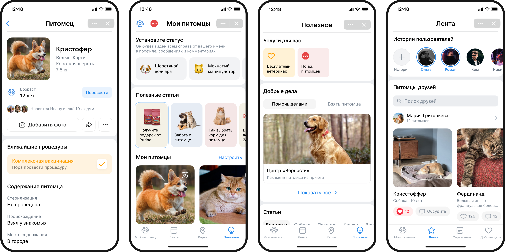
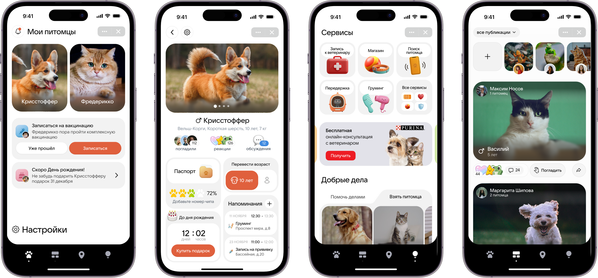
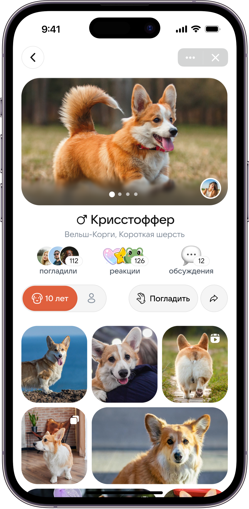
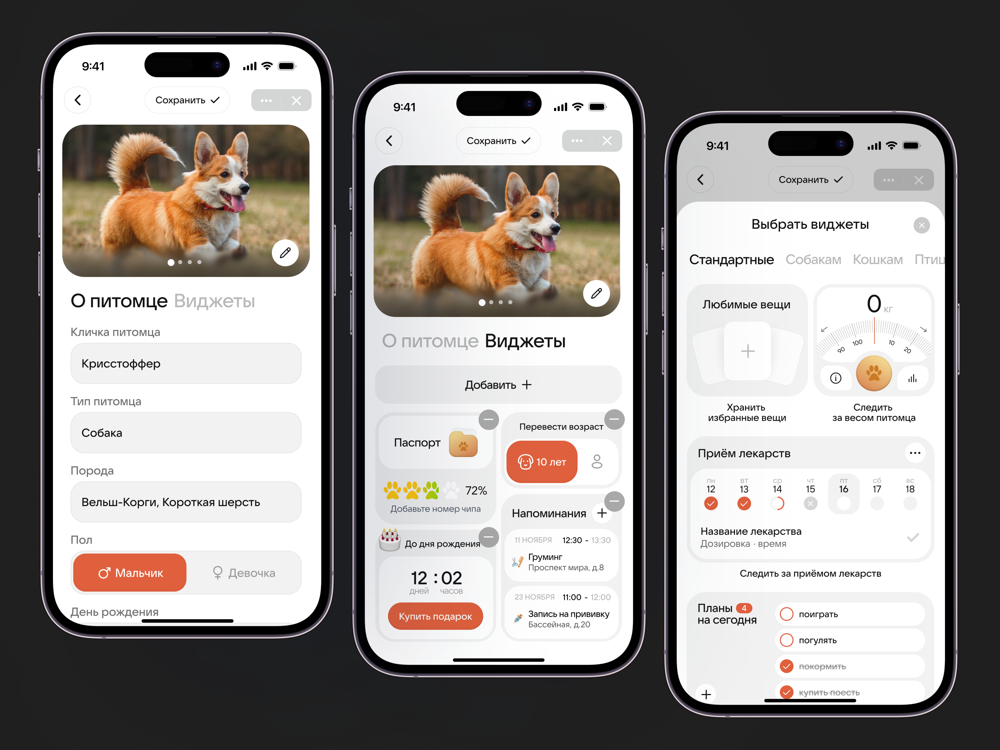
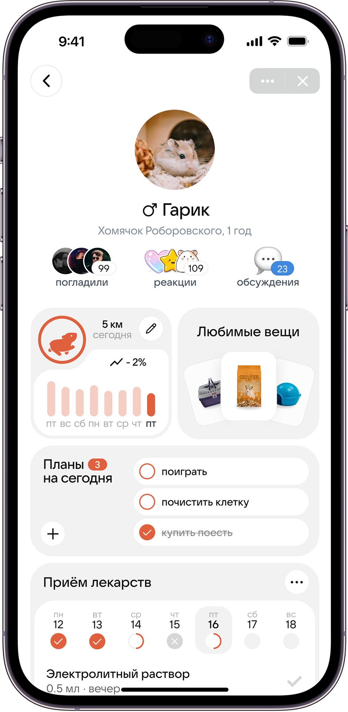
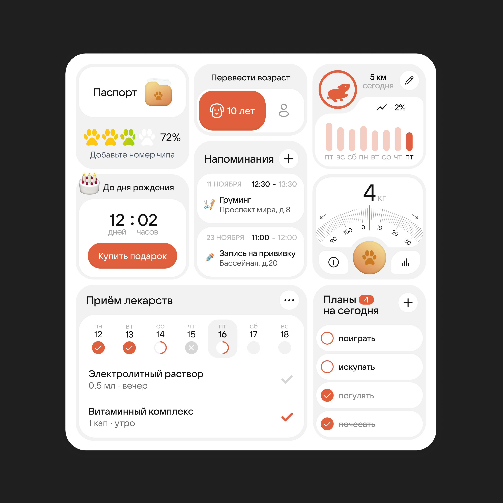
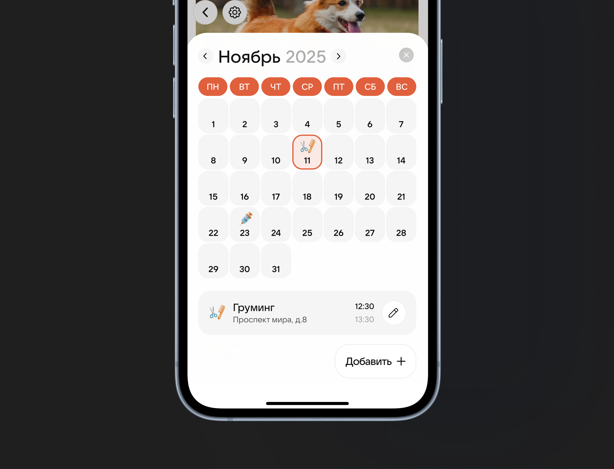
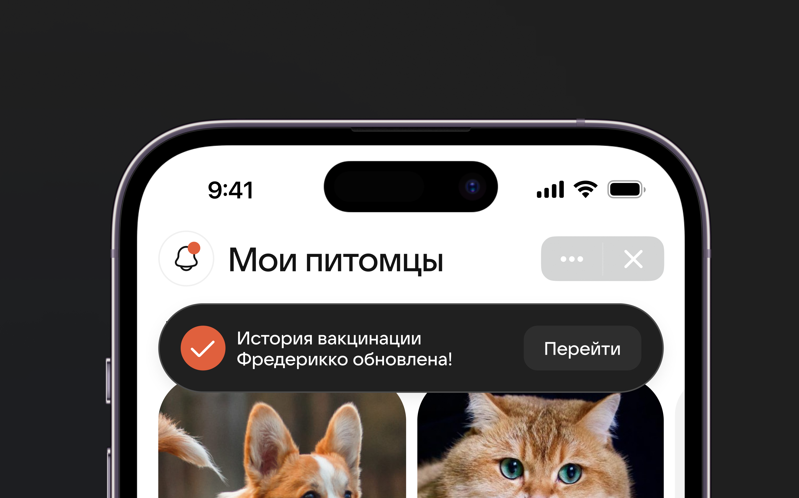
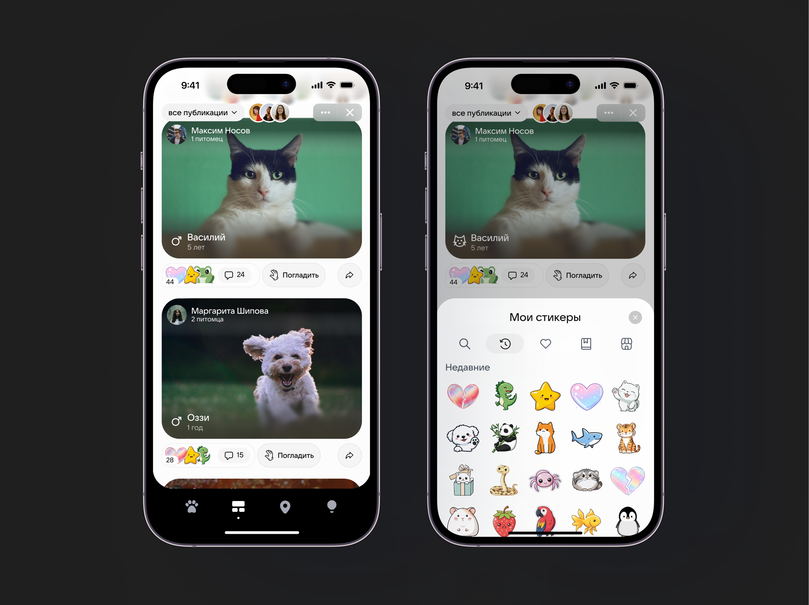
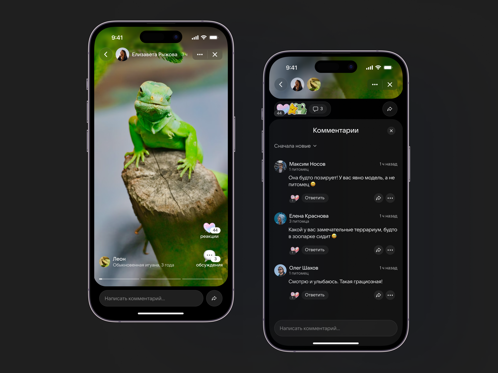

Редизайн экранов раздела «Мои питомцы» VK
Редизайн раздела «Мои питомцы» VK, выполненный в рамках Design Camp от студии Pragmatica. Нужно было переосмыслить пользовательский опыт и визуальный стиль сервиса с фокусом на эмоциональное вовлечение, полезные функции для владельцев питомцев и развитие социальных механик внутри продукта.
 Открыть в Figma
Открыть в Figma

01.
О проекте
В рамках проекта я провела анализ текущего решения, собрала референсы, проработала пользовательские сценарии и разработала визуальную концепцию. Итогом стал редизайн четырёх ключевых экранов с акцентом на карточку питомца, уведомления, элементы геймификации, коммьюнити-функции и нативные интеграции, при сохранении базовой логики сервиса.
Цель проекта — переосмыслить существующий интерфейс и пользовательский опыт, сделав продукт:

Визуально более современным и выразительным.
Эмоционально вовлекающим.
Полезным для владельцев питомцев.
Отличающимся по стилю от базового UI VK, но при этом логичным для экосистемы сервиса.
02.
Задача
Переработать 4 ключевых экрана сервиса.
Усилить карточку питомца как основной элемент продукта.
Продумать нативные интеграции (партнёрства, реклама).
Добавить элементы геймификации, коммьюнити и вовлекающих уведомлений.
Развить существующий функционал, не ломая базовую логику продукта.
03.
Ограничения и сложности
Задание предполагало редизайн, а не создание нового продукта с нуля — важно было сохранить базовую логику сервиса.
Необходимо было работать в рамках экосистемы ВК, но при этом предложить самостоятельный и узнаваемый визуальный стиль.
Проект носил концептуальный характер, поэтому важно было найти баланс между смелыми идеями и реалистичностью реализации.
04.
Анализ текущего решения
На старте я проанализировала текущую версию сервиса и выявила несколько ключевых проблем:
Нарушенная визуальная и смысловая иерархия. На главном экране карточки питомцев находятся внизу, хотя именно они являются самыми важными элементами раздела.
Неочевидное взаимодействие с уведомлениями и настройками. На экране питомца сложно понять, как управлять уведомлениями и какие действия доступны пользователю.
Слабая социальная составляющая. В ленте и карточках питомцев не хватает контента, который мотивировал бы к взаимодействию с другими пользователями.
Недостаток эмоциональности. Интерфейс выполняет утилитарную функцию, но почти не создаёт эмоциональной связи между пользователем и питомцем.

05.
Дизайн
Общая идея
Я не меняла полностью логику сервиса, а развила его как:
Инструмент для отслеживания состояния питомца.
Социальное пространство.
Альтернативу отдельным страницам питомцев в соцсетях.

Профиль питомца
На экране отражена основная информация и виджеты, которые пользователь выбирает самостоятельно. При скролле вниз появляется галлерея публикаций.

Экран питомца, когда его просматривает другой пользователь.

Я подумала, что вместо отображения общей информации будет полезнее сделать выбор виджетов для отслеживания состояния питомца: универсальные и для конкретных видов питомцев. Здесь показано, как можно отредактировать профиль и выбрать виджеты.

Сделала отдельный экран для другого питомца, чтобы показать насколько экраны могут быть кастомными.

Здесь собрала все виджеты, которые у меня получились.

Показала, как может выглядеть виджет при раскрытии. В данном случае это календарь с расписанием событий.

Пример тоста, который сообщает, что информация изменилась.

Лента
Показала в видео функционал раздела ленты и эмоциональную механику «погладить питомца», которая увеличивает вовлеченность пользователей.
Одной из особенностей визуального стиля являются уникальные стикеры, которые можно ставить в качестве реакций на пост или сообщение.

Раскрыла функционал историй. Истории являются частью публикаций, поэтому можно не только поставить реакцию, но и обсудить. Есть возможность перейти на аккаунт хозяина или его питомца.

05.
Результаты
01
Создала свежий и индивидуальный визуальный стиль, отличающийся от стандартного UI VK
02
Развила существующий функционал без радикального изменения логики продукта
03
Сделала акцент на полезных и настраиваемых функциях для владельцев питомцев
04
Пользовательский опыт стал более персонализированным и эмоциональным